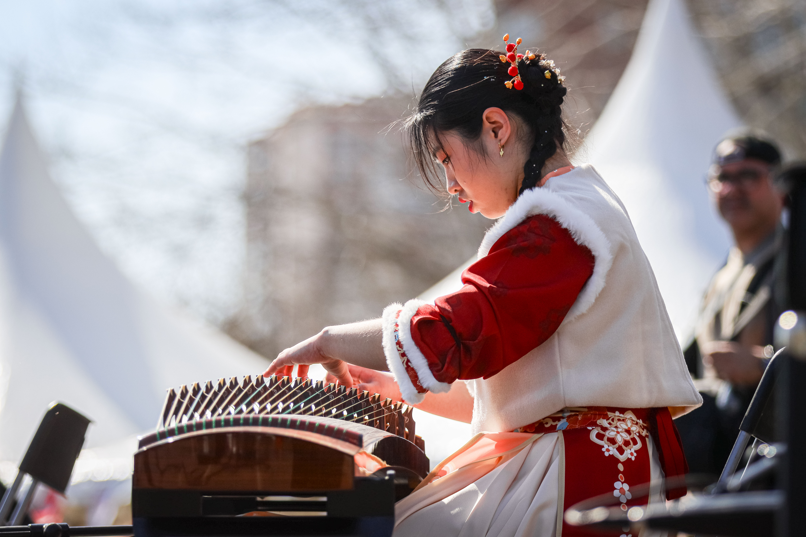
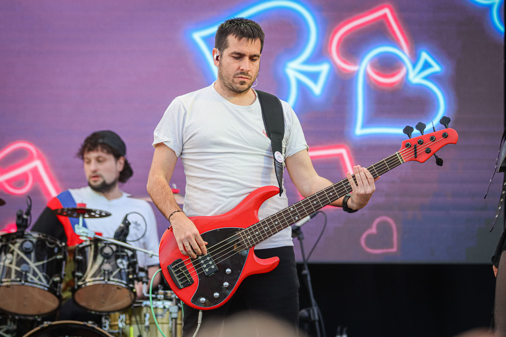

Madrid Río's Puente del Rey esplanade hosted the Madrid Spring Festival from February 27 to March 1, the city's closing celebration for Chinese New Year and, this year, the biggest edition yet. Free and open to all audiences, the festival brought together Madrid's Chinese and Spanish communities under the theme "Dos culturas, un solo latido" — two cultures, one heartbeat.
Visitors could try on the qipao, the traditional Chinese dress, and learn about its history and symbolism, alongside workshops in Chinese calligraphy, crafts, tai chi and wushu. Organisers estimated more than 25,000 visitors over the three days, with the festival's economic impact on sport, culture and tourism expected to top €10 million.

The music programme was built around a cultural exchange piece created specifically for the festival: guzheng player Wan Xing and flamenco guitarist Wang Can performed adaptations of traditional Chinese and Spanish repertoires together, including a crossover encounter between Spanish zarzuela and Chinese classical music, plus a film screening with live musical accompaniment.

Free concerts and film screenings ran across all three evenings on the festival's main stage, drawing crowds alongside the daytime cultural programme. The weekend built toward Sunday's Carrera de la Primavera, the Spring Race, which set off at 9:00am with 6,000 runners representing more than 50 nationalities — closing the festival on the same note it opened: two communities, one event.
Image Media covered all three days with a 19-person team on the ground, from the cultural village and concert stages through to Sunday's race, giving organisers and participants a full record of the weekend.